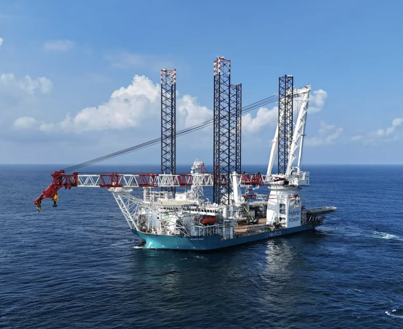

船舶行业尤其需要能够跨越船舶、软件、设备和业务边界的复合型人才。五到十年的机会，多半落在工程与数字的交叉带。
切换主题阅读。图纸、模型和算法最终必须落到钢板、焊缝、管路、设备和工人手上。
总体设计人员要平衡船型、载重量、速度、稳性、油耗、结构、设备、法规和成本。他们需要理解整艘船，而不能只关注一个局部设备。
这类人才稀缺，是因为培养周期长：既要扎实的船舶工程基础，又要在真实项目中反复经历权衡。没有总体观，后面的软件与智能化很容易做成局部优化、整船失衡。
流体、结构、热力学和多物理场仿真人才仍然稀缺。船舶仿真不仅要求数学和编程能力，还要求理解真实船舶的工况、边界条件和试验数据。
只会跑软件、不理解海况与试验误差的人，很难产出能被船厂与船级社采信的结果。
这类人才需要掌握控制理论、实时系统、工业通信、PLC、嵌入式软件和船级社规范。他们要让推进、配电、机舱和船桥在各种异常情况下保持安全运行。
与互联网后端不同，船上系统强调确定性、冗余与可认证——「差不多能用」远远不够。
船舶工业软件开发和普通互联网开发不同。工程师要同时处理三维模型、图纸、物料、工艺、版本、规则、设备数据和现场流程。
真正有价值的人才，往往能够把软件功能翻译成船厂工人、设计师、采购人员和船东都能使用的工作流程。懂代码但不懂分段建造与报工习惯，产品很难在现场活下来。
船舶每天可以产生大量传感器和运营数据，但数据格式、采样频率、质量和接口往往不统一。数据工程师需要建立可靠的数据模型、数据管道和分析平台。
数字孪生工程师还要理解物理模型，不能只做三维展示。否则孪生会停在「好看」，无法回答寿命、油耗与改造影响这类问题。
随着 IMO 减排要求、欧盟碳排放交易和 FuelEU Maritime 等规则发展，行业需要既懂船舶工程，又懂碳核算、燃料生命周期和法规合规的人才。
他们要能把「排放数字」翻译成燃料选择、航线调整、改造时点与租船报价，并在合规报表之上支撑经营决策。
他们需要理解工业控制系统、船岸网络、远程运维、身份认证、漏洞管理和应急响应。由于船舶系统寿命长、设备老旧、供应商众多，网络安全难度比普通企业信息系统更高。
船舶产品必须面对国际规则和认证。懂技术、懂法规、能与船级社和国外船东沟通的人才，对大型船厂和国际供应商非常重要。
这类人往往决定产品能否「入级、投保、远洋」——技术完成不等于市场可交付。
船厂现场仍然需要大量能够解决实际问题的人。图纸、模型和算法最终必须落到钢板、焊缝、管路、设备和工人手上，因此现场调试、质量管理、工艺管理和项目协调人才长期不会被替代。
未来很稀缺的一类人，是既懂船舶工程，又能开发软件，还能阅读国际规则和与海外客户沟通的人。

切换主题阅读。共 18 个方向，按主题归并。
船舶设计软件需要覆盖船体、结构、轮机、电气、管路、设备布置、生产工艺、仿真分析和规范检查。国内市场目前仍有较大的国产替代空间，尤其是大型集装箱船、LNG 船、豪华邮轮、海工装备和特种船舶领域。
未来的软件还会加入参数化设计和人工智能辅助设计功能，例如自动生成多个船型方案、检查管路碰撞、优化船体重量、预测油耗、识别规范风险，并根据历史项目经验推荐设计方案。
船舶设计、采购、生产、试验和运营需要共享统一的数据。未来的数字主线系统，会把设计模型、物料编码、采购订单、生产任务、质量记录和维修资料连接起来。
设计人员修改设备或管路后，相关物料清单、加工图纸、安装任务和质量检查项目可以同步更新。这个方向能够直接减少返工、错装、漏装和项目延期，对大型船厂尤其重要。
大量中小船厂仍然依赖 Excel、纸质审批和人工沟通。它们需要价格合理、部署快速、学习成本低的数字化工具。
未来的产品可以从采购、库存、计划、质量、报工等单一场景切入，再逐步扩展到 PLM、MES 和设备管理。软件需要兼容现有图纸、表格和人工流程，帮助中小船厂逐步完成数字化升级。
船舶设备在远洋航行中发生故障，会造成停航、延误和高额维修费用。预测性维护系统会持续分析主机、发电机、泵、压缩机、推进器和轴系的运行数据。
未来的平台能够识别异常趋势、判断故障原因、估算剩余寿命、推荐维修步骤，并自动关联备件库存和下一次靠港计划。船东可以提前安排人员和材料，降低突发故障风险。
LNG、甲醇、氨、氢、电池和混合动力将长期并存。不同船型、航线和港口条件会对应不同的燃料方案。
新燃料需要配套的储罐设计、燃料消耗模拟、泄漏检测、通风控制、消防隔离、应急处置和船员培训系统。氨和氢具有较高的安全要求，因此相关设计、仿真和运营软件会形成长期需求。
国际航运的减排规则持续收紧，船东需要掌握船舶排放量、燃料消耗、碳配额、航线碳成本和改造收益。
未来的碳管理平台会连接航行数据、燃料价格、天气、港口要求、船速、货量和船舶改造方案。系统可以帮助船东比较不同燃料和航速方案，计算投资回报，并支持 IMO、欧盟和港口监管要求。
船舶接入卫星通信、云平台、远程运维系统后，导航、推进、配电和货物系统都可能面临网络攻击风险。
未来需要专门面向船舶的网络安全产品，包括资产识别、网络分区、权限管理、漏洞检测、访问审计、日志分析、补丁管理和应急恢复。老旧船舶的安全改造会成为重要市场，因为许多设备无法直接更换。
智能船桥会融合雷达、AIS、电子海图、视觉、卫星定位、海况和气象信息，为船员提供航迹规划、碰撞预警、自动避碰和靠泊建议。
港区、内河、渡船、测量船和海上风电运维船的航线相对固定，环境条件更容易控制，因此这些场景可能较早实现高程度自动化。远洋大型船舶会优先发展辅助驾驶、智能决策和人机协同。
船舶会与船东、港口、维修企业、货主和监管机构持续交换数据。岸基人员可以远程分析设备状态，船东可以掌握油耗和航行效率，港口可以提前安排靠泊和装卸。
远洋通信存在延迟、带宽限制和中断风险，因此船舶需要具备边缘计算能力。关键监控、报警和控制功能要能够在断网时继续运行，通信恢复后再同步数据。
海上风电快速发展后，需要大量风电安装船、运维船、人员转运船和海上施工船。相关软件需要管理船舶调度、风机故障、海况、潮汐、人员资质、备件和维修窗口。
未来系统可以综合风浪、风机状态、船舶位置和人员安排，选择合适的维修船和作业时间，减少等待和无效航行。这个方向连接了船舶、能源和海洋工程，具有较高的行业壁垒。
深海探测、海底管线施工、极地航行和海洋资源开发对远程控制、环境感知、结构安全和设备可靠性要求很高。
未来数字孪生系统可以模拟海况、评估结构风险、规划水下作业、控制无人潜器并预测设备寿命。这些项目数量相对有限，但技术门槛高、单项目价值大。
大型船舶涉及数千家供应商和数万种物料。设备延期、型号变更、技术文件缺失和质量记录不完整，都可能影响交付。
未来的供应链平台会统一物料编码，跟踪设备制造和交付进度，管理质量文件、替代件、备件和售后资料。船厂、设备供应商、船东和船级社可以共享经过授权的数据，减少重复录入和信息错配。
人工智能会优先应用于知识检索、图纸检查、故障诊断、文档处理和生产计划。
工程师可以通过自然语言查询船级社规则，系统可以自动检查图纸中的规范风险；维修人员输入设备异常现象后，系统可以检索历史案例并提供排查步骤；船厂还可以使用 AI 比对设计变更、生成采购清单和整理试验报告。
关键船舶系统需要保留人工审核、数据来源追踪和操作权限控制。AI 输出应当能够解释依据、显示置信度，并在数据异常时停止自动执行。
船舶数字孪生会连接设计模型、设备参数、传感器数据、维修记录、航行数据和环境数据。
成熟的数字孪生系统可以帮助船东判断设备健康状态、比较不同航速和燃料方案、预测维修需求、模拟船舶改造效果，并评估不同运营策略对油耗、排放和寿命的影响。
全球大量船舶已经服役多年，船上设备来自不同年代和不同供应商。随着排放标准提高，这些船需要升级发动机、加装节能设备、改用新燃料、更新导航系统和加强网络安全。
未来需要完整的改造工具链：识别原有设备，建立数字模型，评估改造成本、停航时间、技术风险和节能收益，再验证改造后的系统是否满足船级社要求。
船舶自动化程度提高后，船员需要掌握系统监控、异常判断、人工接管、网络安全和新燃料应急处置。
未来培训平台会结合模拟器、数字孪生、虚拟现实和真实故障案例。船员可以在接近实际的环境中训练设备失效、通信中断、火灾、燃料泄漏和恶劣天气等场景。
船舶融资和保险需要评估船龄、设备状态、维修记录、航行区域、事故风险、碳排放和网络安全水平。
未来，如果这些数据能够持续记录并获得行业认可，银行、租赁公司和保险公司就可以更准确地判断船舶价值和运营风险。设备健康、碳排放和网络安全数据也可能影响保费、贷款利率和二手船交易价格。
国内软件企业走向海外，需要支持多语言、多法规、多船级社和全球供应链协作。
产品还需要通过海外船东验证，适应不同国家的认证制度和服务要求。能够提供开放接口、开发者工具、长期升级和全球技术支持的企业，更容易形成持续竞争力。参与国际标准制定，也会成为软件企业提高行业影响力的重要方式。
中国在造船产能、商船建造、工程执行、生产组织和部分配套设备方面已经很强，不宜简单地说「中国船舶行业全面落后」。
差距主要集中在高端工业软件、复杂船型设计经验、船舶自动化、国际认证、基础数据、软件生态和全球服务网络。
国外企业的核心优势往往来自长期积累。一个软件产品可能背后包含几十年的船型数据、海试数据、事故案例、法规经验和客户反馈，短期投入资金很难完全复制。
中国的优势则在于市场规模大、船厂数量多、工程场景丰富、政策推动强，特别适合在绿色船舶、智能船舶、港口数字化、船舶运维和国产工业软件上形成规模化应用。
船舶行业未来的竞争，会发生在船厂之间，也会发生在：设计软件之间、仿真平台之间、自动化系统之间、绿色燃料方案之间、船队数据平台之间、预测维护和碳管理软件之间、国际标准和认证体系之间。
最有价值的产业机会，通常出现在船舶工程和数字技术的交叉地带。熟悉船舶的人需要懂软件，懂软件的人需要理解船舶，懂设备的人需要理解数据和运营。